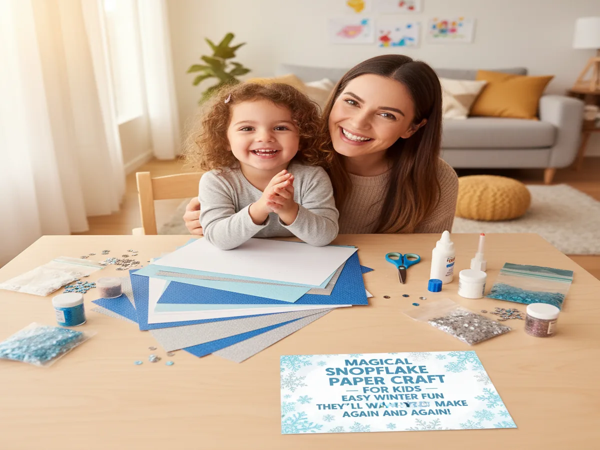
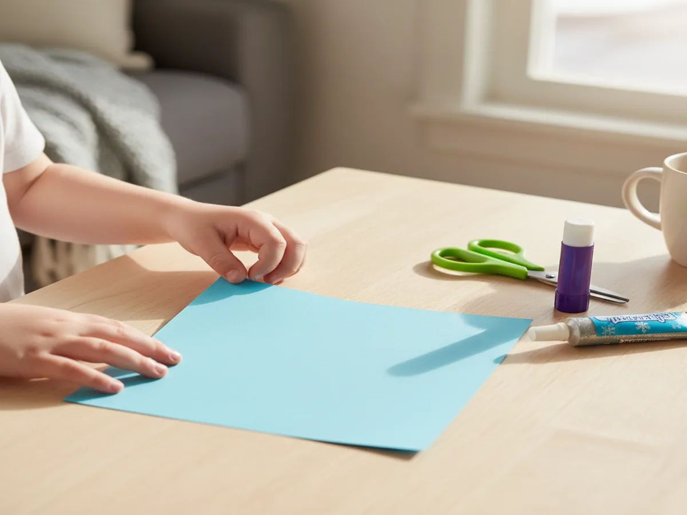
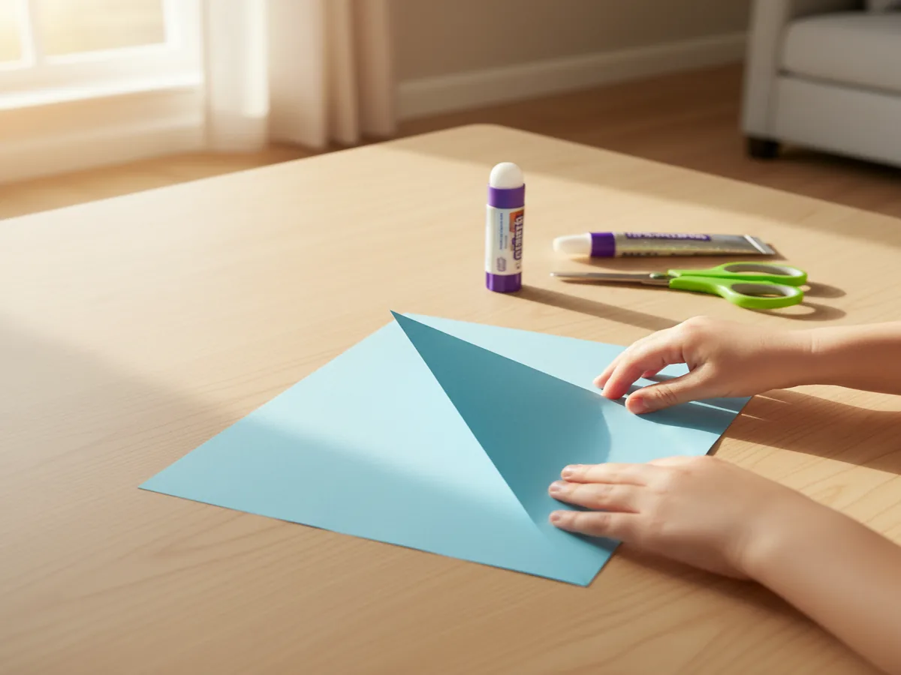
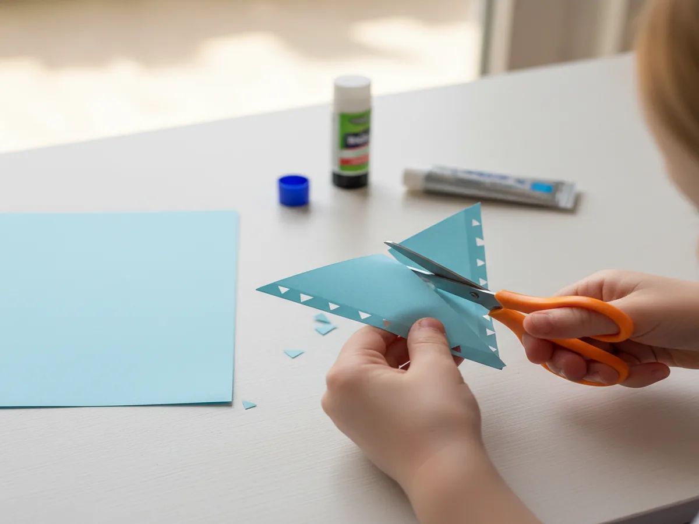
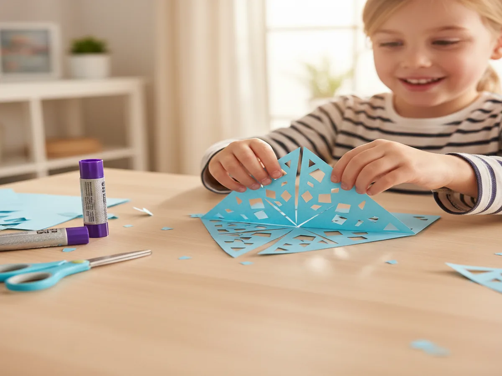
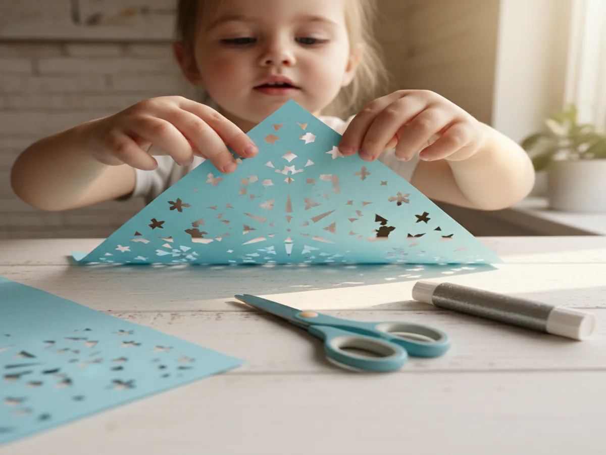

There's something truly magical about snowflakes, and this snowflake paper craft brings all that winter wonder right to your kitchen table. Whether it's snowing outside or you're just dreaming of a white winter, this craft is the perfect way to spend a cozy afternoon with your little ones. It's simple, beautiful, and so satisfying for tiny hands!
Why Kids Love This Craft
Kids are naturally drawn to snowflakes because every single one is unique, just like them! This easy snowflake paper craft for kids lets them explore their creativity with cutting, folding, and decorating. They get to practice fine motor skills while making something they're genuinely proud to hang up and show off. The best part? No two snowflakes will ever look the same, so there's zero pressure to make it "perfect."
This is also a wonderful sensory and learning activity wrapped up in creative fun. Little ones practice symmetry, patterns, and following simple steps. It builds confidence because even the youngest crafters can participate with a little help. And when they hold up that finished snowflake with the biggest grin on their face? That's the stuff core memories are made of.

What You'll Need
- White cardstock paper (8.5 x 11 inches) works best for sturdy snowflakes, one sheet per snowflake.
- Blue construction paper (9 x 12 inches) makes a gorgeous background, one sheet per child.
- Kid-safe scissors with rounded tips so little hands can cut safely.
- Washable glue sticks are perfect for mess-free gluing (we love the purple disappearing kind).
- Silver glitter glue adds that sparkly, frosty magic kids go crazy for.
- Iridescent sequins or small snowflake confetti for extra decoration.
- Small white pom poms (1 cm size) make adorable snowy accents on the finished craft.
- A pencil for tracing snowflake shapes (you already have one in the junk drawer!).
- A flat surface covered with newspaper or a paper towel for easy cleanup.
Step-by-Step Instructions
Step 1: Fold Your Paper Into a Triangle
Start by taking one sheet of white cardstock and folding it in half diagonally to create a triangle. Trim off the extra rectangular strip at the bottom so you have a perfect square folded into a triangle. Then fold that triangle in half one more time to create a smaller triangle. For preschoolers, this is a great chance to talk about shapes! Help them press along the folds with their fingers to get nice crisp creases.

Step 2: Cut Out Your Snowflake Shapes
Now comes the exciting part! Using kid-safe scissors, have your child cut small triangles, half-circles, and notches along the folded edges of the triangle. Remind them not to cut all the way across (or the snowflake will fall apart). There's no wrong way to do this, and that's what makes this simple paper snowflake activity for kids so fun. Every snip creates a surprise when you unfold it!
For toddlers who aren't ready for detailed cutting, you can draw simple shapes along the edges with a pencil and let them try to follow the lines. Or you can do the cutting while they point to where they want the shapes to go.

Step 3: Unfold and Reveal the Magic
This is the moment everyone waits for! Gently unfold the paper and watch your child's eyes light up as the snowflake pattern appears. Carefully flatten it out with your hands or press it under a heavy book for a minute if it's curling up. Each snowflake will be completely unique, which is a wonderful opportunity to talk about how real snowflakes work in nature. Lay all the snowflakes out on the table so everyone can admire their creations.

Step 4: Glue Your Snowflake to the Background
Take a sheet of blue construction paper and help your child apply glue stick to the back of their snowflake. Press it down firmly onto the center of the blue paper. The white-on-blue contrast looks absolutely stunning and really makes the snowflake pop. This is what turns it from a simple snowflake paper craft into a real piece of art they can display. Smooth it down gently from the center outward to avoid wrinkles.

Step 5: Decorate and Add Sparkle
Time to make it magical! Let your child go wild with silver glitter glue, tracing along the edges and lines of the snowflake. They can add iridescent sequins to the tips or press small white pom poms around the snowflake to look like falling snow. This is really where the cut and paste snowflake craft for toddlers shines, because even the littlest crafters can peel, stick, and press decorations onto their masterpiece.
Let everything dry flat for about 15 to 20 minutes before picking it up. Once it's dry, you can punch a hole at the top and thread a ribbon through it to hang in a window, or tape it straight to the fridge for everyone to admire!

Variations to Try
Coffee Filter Snowflakes: Swap the cardstock for round coffee filters! They're easier for small hands to fold and cut, making this version an ideal paper snowflake craft for preschoolers. You can even let kids paint the coffee filters with watercolors first, then fold and cut once they're dry. The translucent look is gorgeous when taped to a sunny window.
Giant Snowflake Collage: Cut a large snowflake shape from poster board and let your child decorate it as a collage. They can glue on torn pieces of tissue paper, cotton balls, foil scraps, and stickers. This is perfect for younger toddlers who aren't ready for scissors yet but still want to join in on the winter snowflake craft with paper fun.
Snowflake Mobile: Make three or four snowflakes in different sizes and hang them from a wooden dowel or a clothes hanger with string at varying lengths. This creates a beautiful spinning mobile for your child's room or a classroom window. It's a lovely way to extend the craft into a decoration the whole family can enjoy all season long.
More Crafts You'll Love
If your crew loved this snowflake paper craft, they'll have a blast with these other popular projects from our blog:
- Adorable Craft Paper Pumpkin Kids Will Beg to Make This Fall
- 20 Adorable Simple Paper Craft Ideas Kids Will Beg to Make Again and Again
Final Thoughts
This snowflake paper craft is one of those activities that never gets old. It's easy enough for little ones to feel successful, creative enough to keep older kids engaged, and beautiful enough that you'll actually want to display the finished results. We've made these year after year, and my kids still get excited every single time we pull out the paper and scissors. If you give this craft a try, I'd love to see your family's creations! Snap a photo and share it on Pinterest so other craft-loving moms can find the inspiration too. Happy crafting, friend!